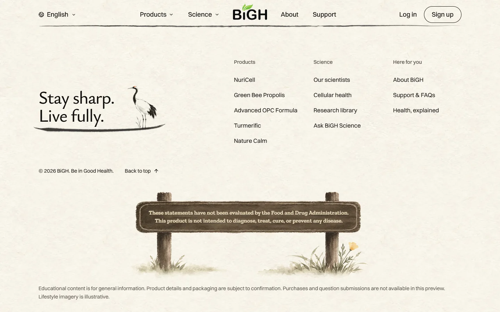
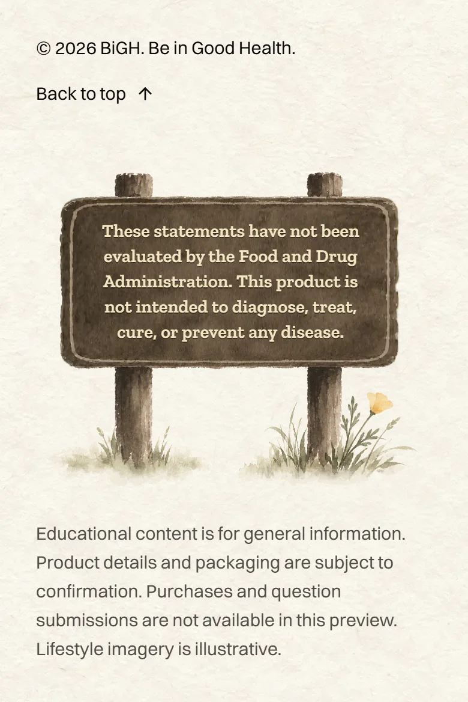
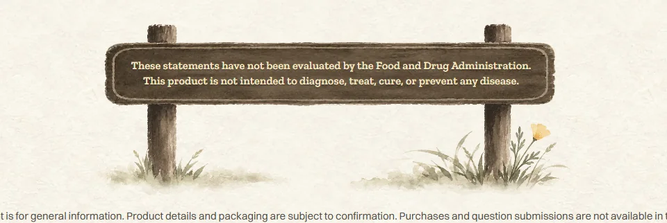
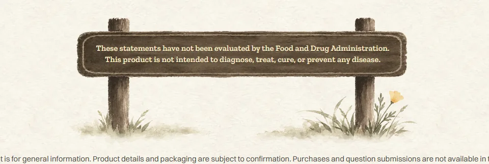

<title>Redwood Sign Rollout</title>
<meta name="claude:viewport-fit-sides" content="cover">
<link rel="preconnect" href="https://fonts.googleapis.com">
<link rel="preconnect" href="https://fonts.gstatic.com" crossorigin>
<link rel="stylesheet" href="https://fonts.googleapis.com/css2?family=Ysabeau:wght@500;600&family=Figtree:wght@400;500;600&display=swap">
<style>
  /* Layout: one column of paper plates: the homepage's last screen first (computer, then phone),
     then a strip of three other pages' signs. Single look on purpose: the site's rice paper. */
  :root {
    --paper: #f5f1e6;
    --plate: #fbf8ef;
    --ink: #1f1d1a;
    --ink-soft: #5b564d;
    --rule: #ddd5c3;
    --display: "Ysabeau", "Iowan Old Style", Georgia, serif;
    --body: "Figtree", "Segoe UI", system-ui, sans-serif;
    color-scheme: light;
  }
  body { background: var(--paper); color: var(--ink); font-family: var(--body); font-size: 17px; line-height: 1.5; }
  .wrap {
    max-width: 1080px;
    margin: 0 auto;
    padding-block: 40px 64px;
    padding-left: max(16px, env(safe-area-inset-left, 0px));
    padding-right: max(16px, env(safe-area-inset-right, 0px));
    display: grid;
    gap: 28px;
  }
  header { display: grid; gap: 8px; max-width: 62ch; }
  h1 { font-family: var(--display); font-weight: 600; font-size: clamp(34px, 6vw, 48px); line-height: 1.05; margin: 0; text-wrap: balance; }
  h2 { font-family: var(--display); font-weight: 600; font-size: 24px; line-height: 1.15; margin: 0; }
  header p, .note { margin: 0; color: var(--ink-soft); }
  .plate { background: var(--plate); border: 1px solid var(--rule); border-radius: 6px; padding: 20px; display: grid; gap: 14px; }
  .views { display: grid; grid-template-columns: minmax(0, 2.4fr) minmax(0, 1fr); gap: 14px; align-items: start; }
  .trio { display: grid; grid-template-columns: repeat(3, minmax(0, 1fr)); gap: 14px; }
  figure { margin: 0; display: grid; gap: 6px; min-width: 0; }
  figure img { display: block; width: 100%; height: auto; border-radius: 4px; border: 1px solid var(--rule); }
  figcaption { font-size: 13px; color: var(--ink-soft); }
  ul { margin: 0; padding-left: 1.2em; display: grid; gap: 4px; max-width: 62ch; }
  @media (max-width: 720px) {
    .views, .trio { grid-template-columns: minmax(0, 1fr); }
    .views figure.phone { max-width: 320px; }
    .plate { padding: 16px; }
  }
</style>

<main class="wrap">
  <header>
    <h1>The redwood park sign, on every page</h1>
    <p>Home, About, Science, Support and all five product pages now end with the same redwood park sign. Screenshots from the finished site build on this computer. Nothing is live yet.</p>
  </header>

  <section class="plate" aria-labelledby="home-h">
    <h2 id="home-h">Homepage, the last screen</h2>
    <div class="views">
      <figure><figcaption>Computer, 1440 × 900</figcaption></figure>
      <figure class="phone"><figcaption>Phone</figcaption></figure>
    </div>
  </section>

  <section class="plate" aria-labelledby="more-h">
    <h2 id="more-h">The same sign on other pages</h2>
    <div class="trio">
      <figure><figcaption>Advanced OPC</figcaption></figure>
      <figure><figcaption>Science</figcaption></figure>
      <figure><figcaption>Nature Calm</figcaption></figure>
    </div>
  </section>

  <section class="plate" aria-labelledby="check-h">
    <h2 id="check-h">What was checked</h2>
    <ul>
      <li>Ten pages (including Korean) on a big laptop, a short laptop and a phone.</li>
      <li>The crane and its promise stay clear of the menu bar on short laptops. On the shortest windows (1366 × 657) the sign draws a little smaller to make room.</li>
      <li>All eleven page checks pass on the finished build: the sign 220/220, homepage 282/282, menu bar 436/436, About, Science, Support and all five products.</li>
      <li>The cream letters measure about 6:1 against the wood, at least 4.7:1 on its lightest spots.</li>
      <li>The words stay real text, two lines on a computer.</li>
    </ul>
  </section>
</main>
